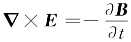

物质中极化现象的存在意味着材料内部有了极化电荷和极化电流，而为了求场就应该把它们放进完整的麦克斯韦方程组中。我们这回要在这种情况下求解麦克斯韦方程组，即其中的电荷和电流不像在真空里那样各等于零，而是由极化矢量所隐蔽地给出。第一步是明确地找出电荷密度ρ和电流密度j，它们是对我们过去定义P时所考虑的相同尺度的小体积平均过的。于是，我们所需要的ρ和j能够从极化强度获得。
我们已在第10章中见到，当极化强度P逐处变化时，就存在由下式给出的电荷密度：
ρ极化 =-▽·P. （32.9）
虽然我们当时处理的是静场，但同样的公式也适用于随时间变化的场。可是，当P随时间变化时，就有电荷在运动，因而也存在极化电流 。每个振动电荷贡献的电流等于其电荷qe 乘以其速度v，设单位体积共有N个这样的电荷，则电流密度j为
j=Nqe v.
既然我们知道v=dx/dt，那么j=Nqe （dx/dt），这恰好就是dP/dt。因此，由变化着的极化强度引起的电流密度为
（32.10）
我们的问题现在既直接而又简单。利用式（32.9）和（32.10），我们要用由P表示的电荷密度和电流密度来写出麦克斯韦方程组（假定在该材料中并没有别的电流和电荷）。然后再用式（32.5）把P与E联系起来，并对E和B求解方程，寻找波动解。
在做此事之前，我们想要做一个历史性的注解。麦克斯韦原来写出的方程式在形式上与我们现在所用的不同。由于这些方程在过去许多年中曾被写成这种不同形式——而且目前还有许多人按照那样来写——我们将解释其中的区别。在早期，介电常量机制还未受到充分和清楚的认识。原子的本性既未被理解，材料的极化也不清楚。因此人们并未认识到对电荷密度ρ会有来自▽·P方面的贡献。他们仅凭那些不受原子束缚的电荷（诸如在导线中流动的电荷或从表面上擦去的电荷）来思考问题。
今天，我们更喜欢让ρ代表总 电荷密度，包括被束缚的原子电荷所产生的那部分。若我们把这一部分称为ρ极化 ，则可以写出
ρ=ρ极化 +ρ其他 ，
式中ρ其他 就是麦克斯韦曾经考虑过的电荷密度，而且是指那些不会被束缚于个别原子上的电荷。于是可写出
在麦克斯韦方程组中有关▽×B的电流密度，一般也有来自受束缚的原子电流的贡献，因此可以写出
j=j极化 +j其他 ，
而麦克斯韦方程则变成
现在你可以明白，假如由下式定义 一个新的矢量D：
D=∈0 E+P， （32.14）
则两个场方程就会变成
▽·D=ρ其他 （32.15）
和
这些实际上就是麦克斯韦对于电介质所用的形式。他的其余两个方程则是

和
▽·B=0，
这些与我们目前所用的相同。
麦克斯韦以及其他早期工作者还遇到一个与磁性材料（我们不久即将加以考虑）有关的问题。由于他们还不知道导致原子磁性的环行电流，因此他们所使用的电流密度还缺少这另一部分。他们实际上写出的并非式（32.16），而是
（32.17）
式中的H与∈0 c2 B不同之处在于后者已包括了原子电流的效应 [3] （于是j′就代表剩下的其余电流）。所以麦克斯韦拥有四个 场矢量E，D，B和H，D和H是不关心材料内部正在进行着的过程的一种隐蔽方法，你会在许多地方找到用这种方式写出的方程组。
为了求解该方程组，有必要把D和H与其他的场联系起来，而人们往往写成
D=∈E和B=μH. （32.18）
然而，这些关系式对于某些材料只是近似地正确，而且即使如此也只有在场随时间变化不太迅速时才行（对于按正弦变化的场，人们往往能够 通过使∈和μ成为频率的复变函数而将式子按照这样写出，但对于场的任意时间变化那就不行）。所以在求解这些方程时往往受到各种形式的欺骗。我们认为，正确的办法乃是用目前所理解为基本的那些量来保持那些方程式——而这正是我们一贯做的。